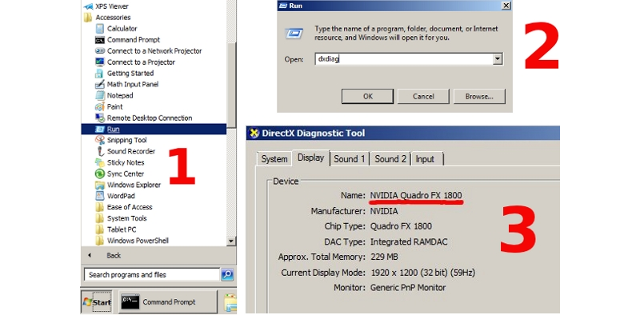

Problems and Solutions¶
Problems Upon Startup¶
1. The “Browser could not initialize WebGL” message is shown.

Follow the instructions listed in the WebGL Failed to Init section.
2. The user interface or background is shown but the default scene is not rendered. At the same time the http://get.webgl.org/ site and other WebGL applications are working correctly.
Possible causes:
A local web server is not used or the browser is not set up for loading local resources. See the Loading Local Resources section.
The engine tries to load resource files which were moved or deleted.
You are using the old versions of video drivers.
You are using open source drivers which do not fully support WebGL.
For Linux users - due to incomplete OpenGL implementation in open source drivers at the moment it is recommended to use current versions of proprietary drivers for Nvidia and AMD video cards.
You are using an outdated operating system, such as Windows XP.
WebGL Failed to Init¶
The http://get.webgl.org/ page tells about problems when viewing it in recent Chrome or Firefox. What can I do?
Install the latest updates for your system (for MS Windows see the guide). In case of MS Windows install the latest DirectX runtime. Reboot.
It is recommended to timely update video card drivers. To detect your video card and its vendor please type about:gpu (or chrome://gpu) to the address bar of Chrome browser...

or Firefox...

For Windows, you can run the DirectX Diagnostic Tool called dxdiag.
{kind=link}
Download the drivers from the corresponding support center (for example Intel, Nvidia, AMD/ATI). Reboot the system after the drivers are installed.
If the measures described above did not help to initialize rendering (or there is no possibility to update the system) try to change the browser settings.
For Chrome:
Enter about:flags (or chrome://flags) into the browser’s address bar, click Enable under the Override software rendering list option and restart the browser.

For Firefox:
Enter about:config into the browser’s address bar, search for the webgl.force-enabled parameter and double-click on it to switch from false to true.